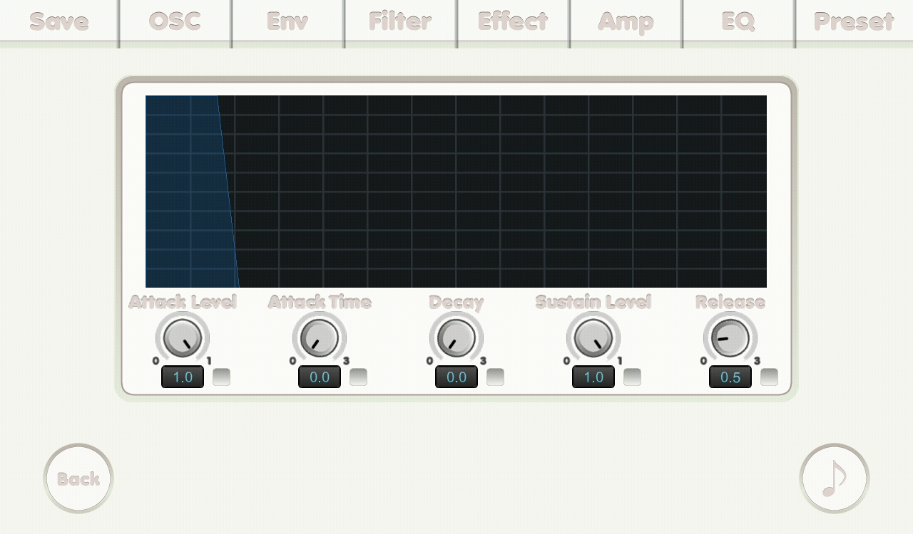

{% include JB/setup %}
Filter Envelope screen

- Attack Level knob: attack level.
- Attack Time knob: attack time in second.
- Decay knob: decay in second.
- Sustain Level knob: sustain level.
- Release knob: release in second.
- Check boxes: if it was checked its related number is affected by mutate feature.